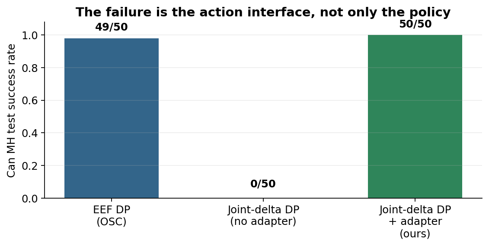
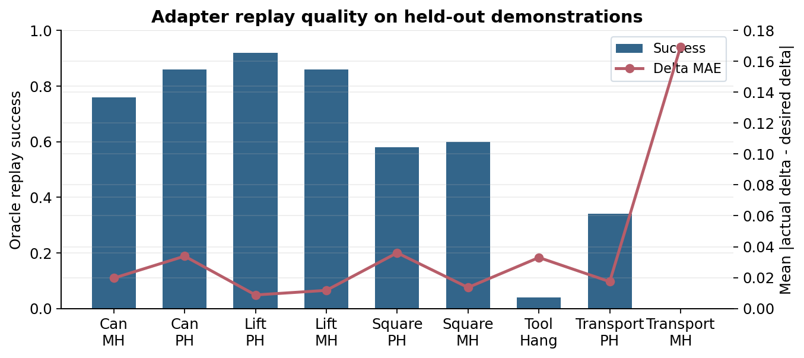
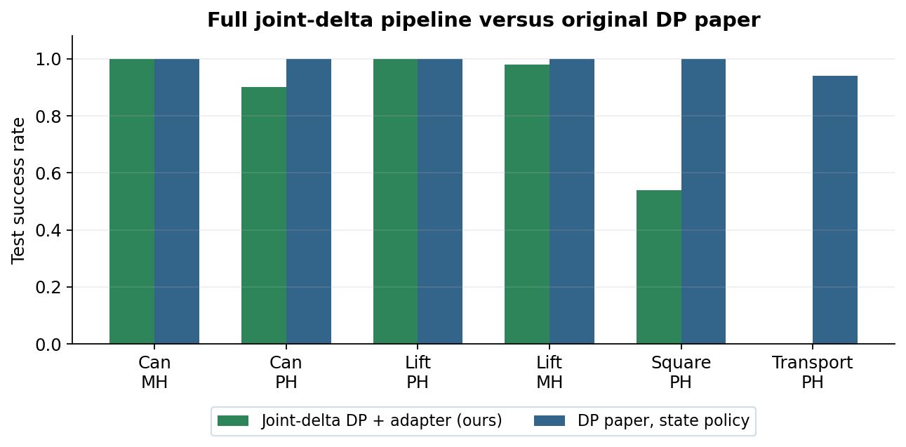
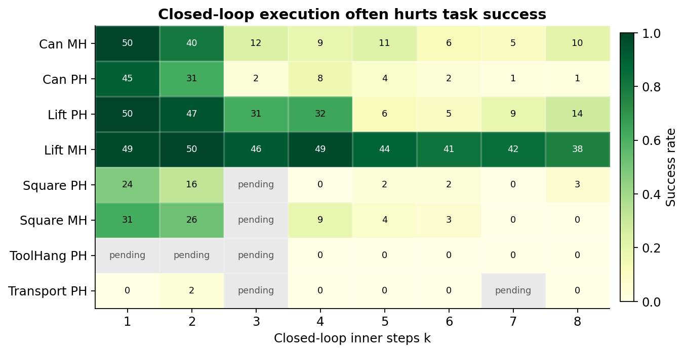

Joint Deltas Are Not Joint Actions
Diffusion Policy can learn joint-space desired motion from proprioception, but deploying those labels through a different controller exposes an action-interface mismatch. A small inverse-controller adapter can recover strong performance on simple manipulation tasks, while contact-heavy tasks reveal the limits of local joint tracking.
Introduction
Diffusion Policy represents a robot policy as a conditional denoising process over future actions. Its empirical appeal is that it can predict high-dimensional action sequences, model multimodal demonstrations, and execute them in a receding-horizon loop. The original paper evaluates this idea mostly through the action interfaces exposed by each benchmark. In RoboMimic, those actions are operational-space end-effector commands for a robosuite controller, not raw joint commands.
This project began with a simple question: if Diffusion Policy is good at
modeling high-dimensional trajectories, can we train the same architecture
to output joint-space actions? The tempting label is available in every
low-dimensional RoboMimic trajectory:
dq_demo[t] = q[t+1] - q[t]. That label is a real measured
transition of the robot arm. However, it is not necessarily the command
that would produce that transition under a joint-position controller.
The experiments support this claim. On Can MH, the original end-effector
Diffusion Policy reaches 49/50 test successes. A
joint-delta Diffusion Policy executed directly through robosuite
JOINT_POSITION gets 0/50. The same
joint-delta policy, passed through a learned inverse-controller adapter,
reaches 50/50. The failure is therefore not simply that a
diffusion model cannot predict joint-space motion. The failure is that the
learned quantity and the deployment action interface are different.
Related Work
Diffusion Policy by Chi et al. formulates visuomotor control as denoising over robot action sequences and reports strong performance across simulated and real manipulation benchmarks, including RoboMimic. Two details are especially relevant here: it uses receding-horizon execution, and it explicitly studies action-space choices such as position versus velocity control. My project keeps the same low-dimensional diffusion policy pipeline but changes what the action label means.
RoboMimic by Mandlekar et al. provides the demonstration datasets and benchmark tasks used here. It was designed to study imitation learning from offline human demonstrations, including PH proficient-human and MH multi-human datasets. robosuite supplies the simulator and controller abstractions. That separation is central to this project: the dataset logs state transitions under one action interface, while our joint-space policy is evaluated under another.
The closest conceptual connection is state-only imitation learning. Radosavovic et al. train an inverse dynamics model to infer actions from demonstrations that contain states but not expert actions. Liu et al. similarly decouple state planning from inverse dynamics in DePO. Those papers ask how to learn when true actions are missing. Here the setting is more specific: RoboMimic does have actions, but they are end-effector OSC commands. If we want joint-position commands, we are effectively in a state-only regime for that action interface.
This work is also related to policy representations such as Implicit Behavioral Cloning and Behavior Transformer, which address multimodal continuous actions. My contribution is orthogonal: before comparing policy classes, the label must be a command that the evaluation controller can execute.
Methods
We modified the RoboMimic low-dimensional Diffusion Policy pipeline as
little as possible. The joint-delta policy uses the same UNet diffusion
workspace, horizon 16, observation history 2,
action execution horizon 8, and 100 DDPM
inference steps. The observation includes object state, end-effector pose,
gripper proprioception, and joint position. The action is the arm joint
transition plus the original gripper command.
The key addition is an adapter
f(state, dq_desired) -> u, where u is a
physical joint-position command. The adapter is a three-layer MLP with
512 hidden units per layer, SiLU activations, and layer normalization. Its
state input is the full low-dimensional simulator state used for adapter
training: object, end-effector position and quaternion, gripper qpos,
joint position, and joint velocity.
To train the adapter, we generated synthetic inverse-controller data in
simulation. For each demonstration state, the simulator is reset to the
logged state. We sample 32 candidate joint-position commands in the physical
range [-0.25, 0.25] radians per joint, execute each command
once through JOINT_POSITION, and record the actual joint
delta that resulted. For Can MH alone this produced 2,008,192 one-step
trials over 62,756 demonstration timesteps. Across tasks, adapters are
trained on held-out-demo splits: PH uses demos 0:150 for
training and 150:200 for validation, while MH uses
0:250 and 250:300.
Experiments
1. Is naive joint-space execution the problem?
The first diagnostic compares three Can MH policies under the same 50
seeded rollout protocol. The original end-effector policy uses the native
OSC action interface. The naive joint-delta policy sends predicted joint
deltas directly to JOINT_POSITION. The adapter policy uses
the same joint-delta Diffusion Policy but inserts the learned inverse
controller before execution.

The joint-delta policy was not obviously random. In an offline validation check conditioned on ground-truth teleoperated state, its arm joint-delta MAE was 0.006985 rad over 1,308 validation timesteps. The mean absolute target delta was 0.009394 rad. This is not perfect, but it is good enough that a 0/50 rollout result points to the interface mismatch rather than simply an untrained model.
2. Can the adapter replay held-out demonstrations?
Before using a learned policy, we tested the adapter with oracle desired
deltas from held-out demonstrations. At each step, the desired motion is
computed from the demo, but the adapter state is the live simulator state.
This tests whether f can keep the robot near the intended
joint trajectory after its own small errors accumulate.
| Task | Adapter val MAE | Oracle replay success | Replay delta MAE |
|---|---|---|---|
| Can MH | 0.004868 | 38/50 | 0.019667 |
| Can PH | 0.005638 | 43/50 | 0.033875 |
| Lift PH | 0.006093 | 46/50 | 0.008774 |
| Lift MH | 0.007666 | 43/50 | 0.011748 |
| Square PH | 0.010626 | 29/50 | 0.036040 |
| Square MH | 0.009184 | 30/50 | 0.013600 |
| Tool Hang PH | 0.005779 | 2/50 | 0.032994 |
| Transport PH | 0.007449 | 17/50 | 0.017372 |
| Transport MH | 0.007266 | 0/50 | 0.169473 |

The important lesson is that one-step command prediction error is not the whole story. Tool Hang has a low adapter validation command MAE, yet its oracle replay success is 2/50. The task is high precision and contact sensitive, so small local errors change later object states in ways the demonstration deltas no longer correct.
3. Does the full joint-delta policy work beyond Can?
We trained joint-delta Diffusion Policies for the available RoboMimic low-dimensional variants, usually for 5000 epochs. The full pipeline combines the learned policy with the held-out-demo adapter. For context, Figure 4 also includes the original Diffusion Policy paper's reported RoboMimic state-policy results for the closest matching architecture, DiffusionPolicy-C.

This result gives a more nuanced answer than "joint space works" or "joint space fails." On Can and Lift, desired joint transitions plus an adapter are enough. On Transport, even a two-arm-compatible runner and adapter do not solve the task. That failure is consistent with the oracle replay results: if the adapter cannot replay held-out demonstrations robustly, a learned policy has little chance of succeeding.
4. Should the adapter be run as a closed-loop servo?
The final experiment asks whether a desired joint transition should be
executed in one shot or iteratively. In closed-loop mode, the runner sets
q_target = q_current + dq_desired. For k inner
steps, it recomputes the residual q_target - q_current,
sends that residual through the adapter, and steps the simulator. Thus,
the first inner step uses the full desired delta and later steps try to
remove the remaining error.

The closed-loop result is surprising at first: more servo iterations do
not generally improve task success. Can MH drops from 50/50 at
k=1 to 40/50 at k=2 and 12/50 at
k=3. Lift MH is the main exception, with 50/50 at
k=2. The reason is that k is not just extra
adapter computation. Each inner step is a real robosuite control step, so
closed-loop execution changes the amount of simulated time spent on each
policy action. Better local joint tracking can damage contact timing.
Discussion
The project exposes a failure mode that is easy to miss in imitation learning. Supervised action labels are only meaningful relative to a controller. If the demonstration action is an OSC end-effector command, and the deployment action is a joint-position command, then the policy cannot be trained by simply replacing the label with a measured state difference and hoping the controller interprets it the same way.
The adapter is a practical bridge. It converts state-only desired transitions into executable commands, similar in spirit to inverse dynamics models in state-only imitation learning. It also provides a diagnostic tool: when oracle replay fails, the bottleneck is not the diffusion policy. The desired transition itself is not being converted into a robust action sequence under the controller.
There are several limitations. First, all experiments are in simulation, and the adapter assumes access to accurate low-dimensional simulator state. Second, generating inverse-controller data is expensive: Can MH alone used over two million one-step probes. Third, command saturation is common, which suggests that the desired deltas sometimes ask for more than the controller range can produce in one step. Fourth, closed-loop adapter execution changes control timing, so it is not a free improvement over one-step execution. Finally, the hardest tasks involve object contact and multi-arm coordination; local joint tracking is not enough to prevent object drift.
Conclusion
The main answer to the original question is yes, but with a condition. Diffusion Policy can learn useful joint-space desired transitions, and on Can and Lift those transitions can drive high-success policies. However, observed joint deltas are not controller commands. The action interface must be modeled explicitly.
We think the broader lesson is that action representation is not only a question of dimensionality or policy architecture. It is also a question of semantics. A state transition, an end-effector command, a normalized joint-position command, and a torque are different objects, even when they all move the same robot. For imitation learning systems that reuse offline demonstrations under new controllers, the adapter between these objects can be as important as the policy itself.
References
- Cheng Chi, Siyuan Feng, Yilun Du, Zhenjia Xu, Eric Cousineau, Benjamin Burchfiel, and Shuran Song. Diffusion Policy: Visuomotor Policy Learning via Action Diffusion, RSS 2023.
- Ilija Radosavovic, Xiaolong Wang, Lerrel Pinto, and Jitendra Malik. State-Only Imitation Learning for Dexterous Manipulation, IROS 2021.
- Minghuan Liu, Zhengbang Zhu, Yuzheng Zhuang, Weinan Zhang, Jianye Hao, Yong Yu, and Jun Wang. Plan Your Target and Learn Your Skills: Transferable State-Only Imitation Learning via Decoupled Policy Optimization, ICML 2022.
- Ajay Mandlekar, Danfei Xu, Josiah Wong, Soroush Nasiriany, Chen Wang, Rohun Kulkarni, Li Fei-Fei, Silvio Savarese, Yuke Zhu, and Roberto Martin-Martin. What Matters in Learning from Offline Human Demonstrations for Robot Manipulation, CoRL 2021.
- Yuke Zhu, Josiah Wong, Ajay Mandlekar, Roberto Martin-Martin, Abhishek Joshi, Kevin Lin, Abhiram Maddukuri, Soroush Nasiriany, and Yifeng Zhu. robosuite: A Modular Simulation Framework and Benchmark for Robot Learning, 2020.
- Pete Florence, Corey Lynch, Andy Zeng, Oscar Ramirez, Ayzaan Wahid, Laura Downs, Adrian Wong, Johnny Lee, Igor Mordatch, and Jonathan Tompson. Implicit Behavioral Cloning, CoRL 2021.
- Nur Muhammad Mahi Shafiullah, Zichen Jeff Cui, Ariuntuya Altanzaya, and Lerrel Pinto. Behavior Transformers: Cloning k Modes with One Stone, 2022.